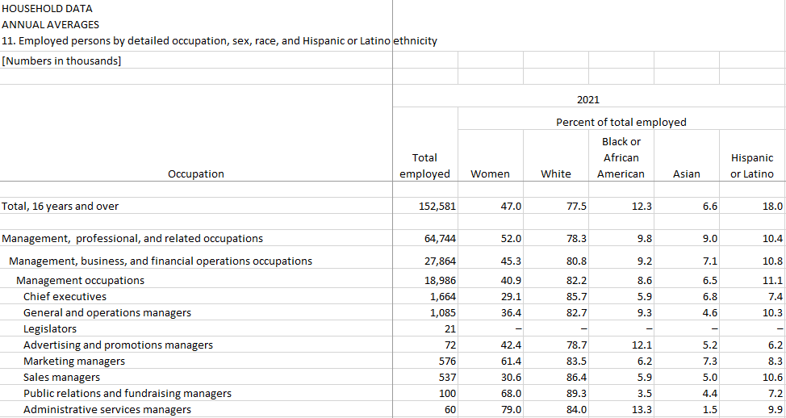
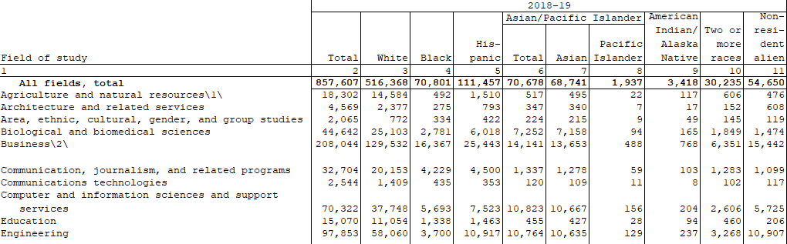
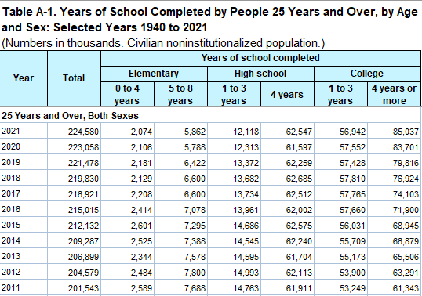
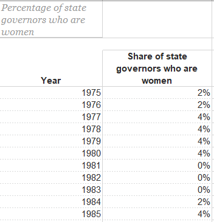
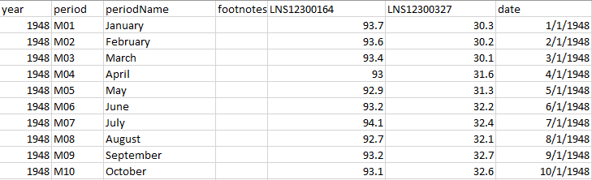
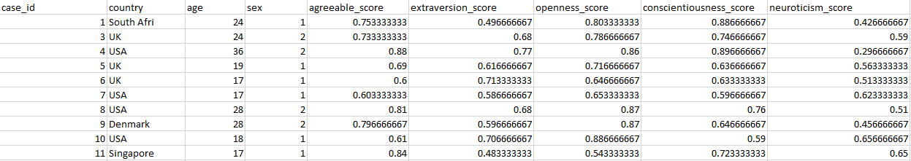

The data sources used for this project can be found below. Please have browser pop-ups enabled!
The data used in this project can be accessed via direct download of data, APIs in R, and APIs in Python.
"The Bureau of Labor Statistics is a unit of the United States Department of Labor. It is the principal fact-finding agency for the U.S. government in the broad field of labor economics and statistics and serves as a principal agency of the U.S. Federal Statistical System."1 The advantage of using the BLS as a data source is not only the abundance and specificity of the data but also the reliability of a well-organized and managed government source.
As shown in the image above, all of the data obtained from the BLS follows a similar tabular format. To directly download the BLS data, click here. To visit the original pages from which the data was downloaded, click here.
"The National Center for Education Statistics is the primary federal entity for collecting and analyzing data related to education in the U.S."2 The NCES is also responsible for gathering, analyzing, and report data on the condition of American education. Similar to the BLS, the NCES is a data source that is highly reliable and abundant in available resources relating to education.
As shown in the image above, all of the data obtained from the NCES follows a similar tabular format. To directly download the BLS data, click here. To visit the original pages from which the data was downloaded, click here.
The U.S. Census Bureau is "the nation's leading provider of quality data about its people and economy."3 Similar to the BLS, the Census Bureau is a data source that is highly reliable and abundant in available resources relating to the economy.
As shown in the image above, all of the data obtained from the Census Bureau follows a similar tabular format. To directly download the BLS data, click here. To visit the original pages from which the data was downloaded, click here.
The Center for American Women and Politics is a nationally recognized and leading source of scholarly research and current data about women’s political participation in the United States.4 CAWP is a unit in the Eagleton Institute of Politics at Rutgers University—New Brunswick, which studies, analyzes, and promotes various aspects of government and public participation. With its connections to a prestigious educational institution, CAWP is a highly reliable data source relating to the field of politics, especially women's involvement in politics.
As shown in the image above, all of the data obtained from the CAWP follows a similar tabular format. To directly download the CAWP data, click here. To visit the original pages from which the data was downloaded, click here.
Various data sets relating to employment rate in the U.S. from 1948 to 2022 were collected using the BLS API and associated data series codes. To better see trends across multiple age groups, I gathered cumulative employment rate data, as well as employment rate data split into age ranges of 16-24, 25-34, 35-44, 45-54, and 55+.
To see the specific R code that contains associated data series codes, click here. To directly download all of the BLS data gathered by the API calls, click here.
In the image above, I took 10 instances from the BLS employment rate for the age group 25-34. The employment rates are displayed per month. The sexes are distinguished by the associated series codes LNS12300164 for men and LNS12300327 for women. The other employment rate data sets that were gathered also follow a similar pattern of year, period, periodName, footnotes, associated series codes, and date. For better readability, I will adjust the associated series codes to the appropriate labels in the next Data Cleaning section.
The Big Five Personality Traits refer to a branch of psychological trait theory that emerged in the mid-20th century. The BFP traits categorize people's temperaments to five broad, factored traits of:
The BFP data was obtained through a GitHub repository containing the BFP scores of over 300,000 people from different countries. The data gathered by this user originated from the raw data available from the International Personality Item Pool (IPIP) NEO-300 questionnaire. The IPIP is an acknowledged and reliable source from which the data in this repository was aggregated.6 Furthermore, the data in this repository underwent another process of data filtering to remove suspicious or invalid responses according to the IPIP validity measurement standards.
To see the specific R code, click here. To directly download all of the BFP data gathered by the API call, click here.
In the image above, I took 10 instances from the BFP. The scores for each of the five personality categories are on a 0-1 scale, where 0 indicates a low tendency and 1 indicates a high tendency towards a specific trait. Additionally, the coding for sex is 1 for males and 2 for females. Using the first item as an example, the individual of case_id 1 would be a male showing relatively high agreeableness, openness, and conscientiousness, while having relatively average extraversion and neuroticism. To accurately restrict the scope to just the U.S. population, I will subset the data in the next Data Cleaning section.
While we have a fair amount of hard data regarding multiple facets for measuring gender equality in the U.S., we lack information on the public sentiment towards this topic. To gain better insight into how the general population views gender equality in the U.S., we will gather Tweets via the Twitter API for specific keywords often used within the feminist and men's rights spheres. The keywords used in the Twitter API call were wage gap, earnings gap, feminism, men's rights, women's rights, and MGTOW.
To see the specific Python code that contains the specific query format, click here. To directly download all of the Tweets gathered by the API calls, click here.
Another source of text data is Wikipedia. We will also use Wikipedia as a method of detecting if there are specific words and/or sentences that are associated with pages relating to men in comparison to pages relating to women. More specifically, we will gather sentences from 30 related pages each for the keywords "Men's rights" and "Women's rights."
To see the specific Python code, click here. To directly download all of the sentences gathered by the crawl, click here.
Notes: